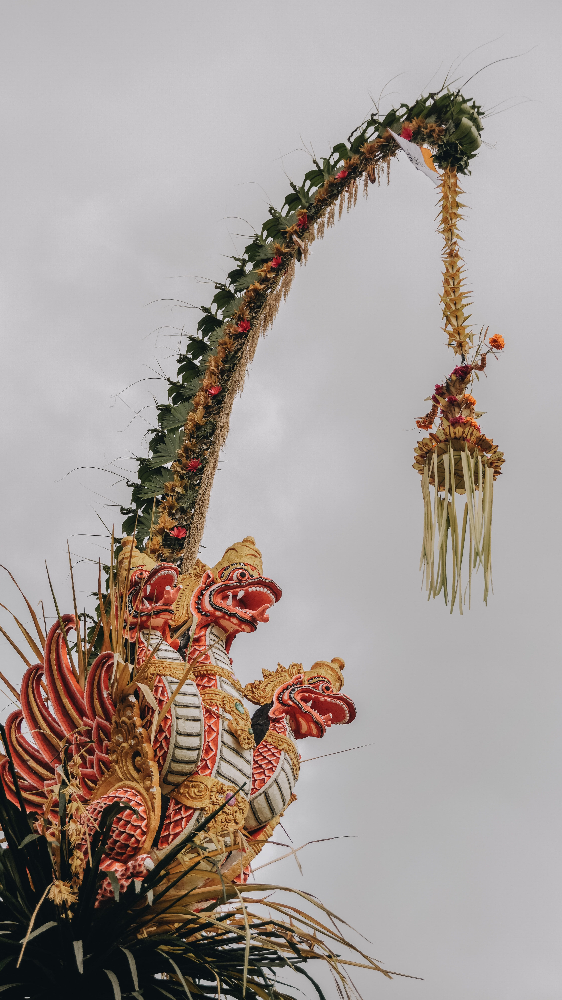

Culture of Bali
Culture
Balinese culture is a mix of Balinese Hindu-Buddhist religion and Balinese customs. It is perhaps most known for its dance, drama and sculpture. The island is also known for its Wayang kulit or Shadow play theatre. Even in rural and neglected villages, beautiful temples are a common sight; and so are skillful gamelan players and talented actors. Even layered pieces of palm leaf and neat fruit arrangements made as offerings by Balinese women have an artistic side to them. According to Mexican art historian José Miguel Covarrubias, works of art made by amateur Balinese artists are regarded as a form of spiritual offering, and therefore these artists do not care about recognition of their works. Balinese artists are also skilled in duplicating art works such as carvings that resemble Chinese deities or decorating vehicles based on what is seen in foreign magazines.

Music
The culture is noted for its use of the gamelan in music and various traditional events of Balinese society. Each type of music is designated for a specific type of event. For example, music for a piodalan (birthday celebration) is different from music used for a metatah (teeth grinding) ceremony, just as it is for weddings, Ngaben (cremation of the dead ceremony), Melasti (purification ritual) and so forth. The diverse types of gamelan are also specified according to the different types of dance in Bali. According to Walter Spies, the art of dancing is an integral part of Balinese life as well as an endless critical element in a series of ceremonies or for personal interests.